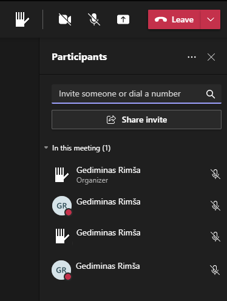

class: center, middle, main-title # Software Engineering Software requirements --- ## Before we begin - Jamboard :) ??? - https://jamboard.google.com/d/1qSLAlE6x9yAb8EJyWF_HrDgvm0WpmAt27OFnkhj5Jjk/viewer?f=0 -- - Slides ??? - Will be shared in chat at the begining of lecture, in case you want click links/check something in an earlier slide. -- - Pre-course questionnaire ??? ------ - https://emokymai.vu.lt/mod/questionnaire/qsettings.php?id=28580 - Last year semster started on 14th, and I forgot to change it - Answer until tomorrow 9 AM -- - Discuss "Taking back ‘Software Engineering’: Craftsmanship is insufficient" ??? ------ - Who watched the talk? Quick poll in Teams. No consequences. - What was not clear in that talk? Something you'd like to hear more about? Or maybe some comments in general? --- ## Goals for today - Requirements - Can explain what they are and why they are needed - Can provide examples of different types of requirements - Requirements analysis - Have an understanding of different ways to document requirements - Know where to start with requirements analysis in your project --- class: middle, center ## Requirements ??? - What are software requirements? "What should the system be like?" - Why do we need them? --- ## Stakeholders - Individuals, groups, or organizations: - Actively involved - Can influence it due to their position - May be affected by the success or failure ??? Open in tabs: - https://www.exposit.com/media/images/Key_Stakeholders_in_Agile.original.png - https://www.exposit.com/media/images/Frame_6.width-800.jpg - https://www.exposit.com/media/images/Frame_5.width-800.jpg - Depends on a project - All of the stakeholders have different requirements. All of their needs have to be taken into account. --- ## Why do we need requirements? - Customers <span class="semi-transparent">- agreement on scope</span> ??? - You finish building some system and show it to the client, and the client says "this is not what I wanted, you'll have to change this and that functionality" - At the end of the project, I get what I wanted (or can prove legally, that it was not delivered). - Other side: At the end of the project, I do not get into "this is not what I wanted" discussion. -- - Managers <span class="semi-transparent">- planning and control</span> ??? - How many people do we need on this project? With what skills? - Are we on track? Will we deliver on time? -- - Designers <span class="semi-transparent">- primary input for design</span> ??? - Both visual design, as well as technical design - subsystems, modules, components, etc. -- - Programmers <span class="semi-transparent">- implementing the right thing</span> ??? - So what do I need to implement / how should it work? -- - Testers <span class="semi-transparent">- quality assurance</span> ??? - What was expected of this feature? How do I know if what I am seeing is correct or not. ??? - Everyone - future reference --- ## Software requirements > Requirements provide the **stakeholders’ view** of what they **expect** the software system to provide. They indicate **what** the software system must do, but do **not** explicitly express **how** it must be done. > <br><br>— <cite>The Essentials of Modern Software Engineering, ACM Books, 2019</cite> ??? Alternative definition: > 1. Software capability **needed by a user** to solve a problem or to achieve an objective. > 2. Software capability that **must be met** or posessed by a system or system component > **to statisfy a** contract, standard, specification, or other **formally imposed document**. > <br><br>— <cite>Systems and software engineering - Vocabulary, ISO 24765:2017</cite> - The same in different words - User needs/objectives are first. Other stakeholders influence primarily via some kind of formal documents (compliance/policies/regulations). --- ## Software requirement examples - A user must be able to use the website on a mobile device. ??? - This is a high-level requirement. It's not immediately actionable. -- - A meeting participant must be able to mute or unmute their microphone at will. ??? - This is a third-person description of functionality. Basic. -- - As the presenter, I want to be able to overlay my camera view over the presented content, so the audience can follow both at the same time. ??? - This is a user story. - Notice the third part - it enphasises value. - Being explicit about value to the user is a good test for implementation. Not all implementations would deliver this value. -- -  ??? - As it is said, "a picture can be worth a 1000 words" - At the same time, this has some prescription of how it is done -- - `GET /equipment-index/inverters` endpoint should also return an additional `acPowerOutput` attribute (in watts) for each inverter ??? - A technical requirement. Value to the user is not clear, but it's very easy for a developer to act on. --- ## Levels of abstraction <img src="https://www.nuclino.com/img/articles/business-requirements.png" width="70%" style="margin-top: -10px"> <div class="copyright">Source: <a href="https://www.nuclino.com/articles/business-requirements-document">Nuclino.com</a></div> ??? - Abstraction in general - hiding lower-level details - Hierarchy - we as humans are good at this, it's a natural way of organizing. - Examples: University groups, military, business companies, government, YouTube (Channels -> Playlists -> Videos) - Specific requirements could be drawn as a tree data structure - From a high-level abstraction of a whole system to a mathematical specification of specific functions - Business requirements describe the high-level business needs, without going into how the solution should be implemented. These may involve carving a market share, reducing customer churn, or improving the customers' lifetime value. - User requirements cover the different goals your users can achieve using the product and are based on the value it delivers to them. User requirements are commonly documented in the form of user stories, use cases, and scenarios. - Product requirements describe in detail how the system needs to operate to meet these higher-level requirements. - Should also be numbered - will see later why that is important (tracability). -- - Tip: Prefer working top-down rather than bottom-up ??? - Why? - Divide and conquer. We are better at breaking one thing down into several than at integrating multiple lower-level things into one. - Lower risk of rework at the lower levels - Lower risk of missing something important. - Example of my SE project where we had to migrate from Desktop app to web page (applet: https://www.thoughtco.com/building-your-first-java-applet-2034332) --- ## Two types of product requirements - Functional <span class="semi-transparent">- what should software do?</span> - Behaviour between inputs and outputs ??? - Functional: How the product solves the user's problem in terms of functionality. - "The system must allow the user to submit feedback through a contact form in the app." -- - Non-functional <span class="semi-transparent">- what should software be like?</span> - Also known as *quality attributes* - Qualities observable during operation - Qualities embodied in the static structure - For example: performance, usability, security, [etc.](https://en.wikipedia.org/wiki/Non-functional_requirement#Examples) ??? - Quality: How well the product solves the user's problem in terms of performance, usability, security, etc. - "When the submit button is pressed, the confirmation screen must load within 2 seconds." --- ## Requirements in the wild - Procurement / RFQ -- - [Document Management and Workflow System, Real Estate Administration Montenegro](https://www.mercell.com/sv-se/m/file/getfile.ashx?id=34965472) ??? - Same in Google Drive: https://drive.google.com/drive/u/0/folders/152sxTUcIFAcCcP3zWYM2rpYQs5z7SnTm -- - [VIISP modernization, Lithuania](https://pirkimai.eviesiejipirkimai.lt/app/rfq/publicpurchase_docs.asp?PID=491625&LID=598498&AllowPrint=1) ??? - VIISP: value - 1.6 M EUR, requiements: 288 pages -- - Product - [Example from another university](http://web.cse.ohio-state.edu/~bair.41/616/Project/Example_Document/Req_Doc_Example.html) ??? - Images not displayed - Includes context diagram -- - Aardvark (2005) - [context](https://www.joelonsoftware.com/2005/08/17/the-project-aardvark-spec/), [spec](https://markqiu.files.wordpress.com/2009/10/copilot_spec1.pdf) ??? - Joel created Trello, co-founded Stack Overflow - Worth reading blog series: https://www.joelonsoftware.com/2000/10/02/painless-functional-specifications-part-1-why-bother/ -- - (Demo) My current project ??? - Not a mature company! - Initial development based on visual prototypes and domain expert availability - Zeplin: https://app.zeplin.io/project/5daddbd530b1aa127f0d7ad8/dashboard - Solution overview: https://lucid.app/lucidchart/b7fb17f0-57b0-499b-8210-a96ddf502e62/edit?shared=true&page=0_0# - Some use cases (who uses how): https://solardesigntool.atlassian.net/wiki/spaces/SDT/pages/62062596/Use+Cases - Flow (sequence of steps): https://solardesigntool.atlassian.net/wiki/spaces/SDT/pages/62259343/F01+Create+Minimal+Sales+Design+Flow - https://solardesigntool.atlassian.net/wiki/spaces/SDT/pages/20086786/Domain+Architecture -- - [Devbridge Lean Requirements Workshop](https://www.devbridge.com/articles/lean-software-development-workshop-guide/) --- ## Common themes - High-level context -- - User-focused -- - Not only what, but also why -- - Varying levels of detail, varying emphases -- - Often captures different priorities --- ## Documentation in general - Good documentation is extremely valuable ??? - Saves time / reduces risk / helps avoid discussing the same things over and over - Preserves knowledge through staff changes - Joel's blog post series on functional specs had good things on it -- - Practice writing - it will pay off ??? - I'd hire for good communication skills over technical ones - It is a differentiator, definitely a highest-valued skill -- - Details are important ??? - Grammar, punctuation, consistent formatting --- ## Requirements specification in your project - 1st delivery - A living document: max grade 0.75 now + 0.25 later -- - Deadline (preliminary) - end of September -- - More details during exercises -- - Goals - Build a shared understanding of the scope of your project -- - Facilitate planning/division of labor -- - Kickstart thinking about the design of the system --- class: middle, center ## Requirements analysis and specification --- ## Requirements analysis - An essential activity in any software project -- - The single most important task in a large software project ??? - Collaborative process. Rarely someone will do it for you in full, esp. with edge cases. -- - Covers - Eliciting (gathering, discovering) requirements -- - Analyzing (refining, improving) requirements ??? - Iterative process - start with simple, increment - https://itsadeliverything.com/images/patton-iterating-mona-lisa.jpg (from https://itsadeliverything.com/revisiting-the-iterative-incremental-mona-lisa) -- - Recording (documenting) requirements --- ## Eliciting requirements - Not just simply asking -- - Iterative dialog between stakeholders and analysts -- - [Many tools and techniques](https://www.bridging-the-gap.com/elicitation-techniques-business-analysts/) -- - Learn how users work - Talk to them - Work with them - Read process descriptions, manuals, etc. -- - Ask questions to "dig" for requirements -- - Use sketches or prototypes -- - Think about why users do something, not just what --- ## What can help you figure out the requirements? - Start top-down -- - Write down the goal (purpose) of the system ??? - Helps sanity-check other requirements if they are aligned with the goal -- - Draw a [context diagram](https://c4model.com/#CoreDiagrams) ??? - Show the one from my current project - Helps identify actors or other systems involved -- - Identify use cases for each actor ??? - In what scenarios is the system neHow does each actor use the system? -- - Identify processes (flows) ??? - Helps figure out how actors interact, and if any additional use cases are needed -- - Identify the main entities within the domain ??? - What "things" or "concepts" are at play? -- - Sketch some initial designs ??? - Both user screens, as well as technical implementation --- ## Analyzing requirements - Ensure [quality of requirements](https://www.guru99.com/learn-software-requirements-analysis-with-case-study.html#3) - correct (functionally) ??? - Analysis is about refining/improving the requirements - i.e. making them better. -- - complete (no holes) -- - feasible (technically, legally) -- - verifiable (yes/no) -- - sufficiently detailed -- - prioritized -- - Understand technical implications ??? - Sometimes multiple alternative reqirements may exist with different implications - For example, a manual process vs. an automated one --- ## Recording requirements - Content over form - Content - shared mental model of what has to be done - Form - how it is documented -- - Some forms - Natural language -- - Structured natural language -- - Graphical -- - Formal specification -- - A mix of the above --- ## Form: Natural language > Users of the system should be able to select folders that are to be excluded from backups. --- ## Form: Structured natural language User story: > **As a** user, > **I can** indicate folders not to backup > **so that** my backup drive isn't filled up with things I don't need saved. -- Acceptance test: > **Given** a list of folders to exclude, > **when** backup is performed, > **then** backup does not contain the excluded folders. --- ## Form: Structured natural language Use case (casual template): - **Title:** Exclude folders from backup - **Primary actor:** User - **Scenario**: 1. User specifies folders to be excluded from backup 2. User saves their preferences 3. When backup is performed, specified folders are not included --- ## Form: Graphical  ??? Public domain image: https://commons.wikimedia.org/wiki/File:Turnstile_state_machine_colored.svg -- - Free-form drawing, diagram, or prototype - Standard notation (e.g. UML) - [UML diagrams](https://tallyfy.com/uml-diagram/#use-case-diagram): use case, sequence, activity, state machine ??? - Also prototypes shown before - Prototyping is a good way to mitigate requirement- and technology-related risks --- ## Form: Formal - Formal specification languages (e.g. Z, OCL)  ??? Example is in Z. Source: https://www.slideserve.com/ranae/logic-specification-and-z-schema --- ## Key takeaways - Requirements are user needs and expectations -- - User involvement and shared understanding of what is required is key to success -- - Prototyping is a good way to mitigate requirement- and technology-related risks -- - Non-functional requirements are just as important as functional -- - There are different ways to document requirements -- - When documenting requirements, focus on content over form -- - A system without any documentation is highly unlikely to be successful -- - Strive to write valuable, distilled, and professional documentation --- class: middle, center # Questions? --- ## Next - Version control systems - Task management systems ??? - More practical - If you have questions - ask up front!